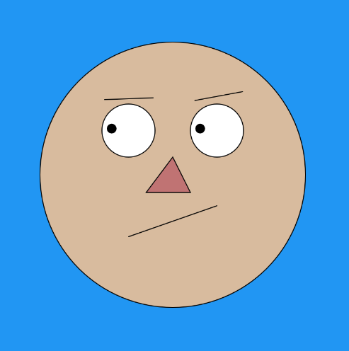
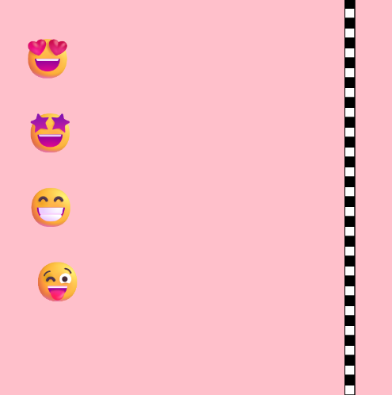

Meus projetos no P5.js

Projeto Monalisa
Criamos uma arte interativa onde os olhos de uma figura seguem o movimento do mouse, simulando o famoso efeito da Monalisa.

Quente e Frio
Criamos um jogo onde o objetivo é encontrar um ponto oculto usando dicas visuais baseadas na distância entre o mouse e o ponto escondido.

Jogo de Corrida
Desenvolvemos um jogo com quatro jogadores que usam teclas do teclado para correr até a linha de chegada.